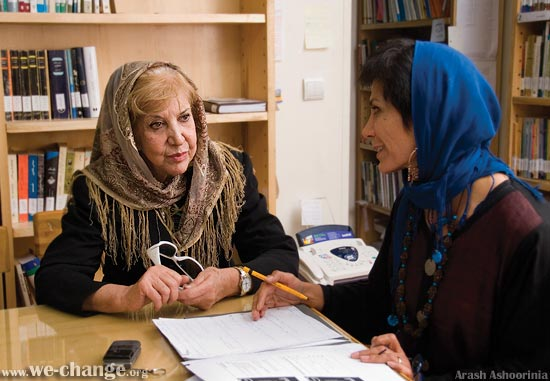

|
|

گفتگو با سيمين بهبهاني
کمپين يک ميليون امضاء، اتمام حجت است
منصوره شجاعي
پنج شنبه2 آذر 1385
سيمين بهبهاني را نه فقط به عنوان زن شاعر که به عنوان زن حق جو و عدالت خواه ومعلمي چهره آشنا در جريان هاي برابري خواه دوران اخير مي شناسيم. 65 سال پيش، آنگاه که بيش از 14 سال نداشت اولين شعر خودرا خطاب به مرم ايران در دوران جنگ مي سرايد با اين آغازه که: اي ملت فقير... و بدين گونه خود را با هويت زن شاعرعاشق و آرمانگرا به جامعه مي شناساند.
محيط فرهنگي خانواده به ويژه بهرهمندي از وجود مادري همچون " فخرالعظما ارغون" که خود از پيشروان جنبش زنان درآن دوران بود از يک سو و کنجکاويهاي شيطنتآميز و جسورانهاش از سوي ديگر موجب گرايش وي به جريان هاي سياسي و اجتماعي مطرح آن زمان مي شود. اما در نهايت عشقي بزرگ به همراه رنجي عميق ، چونان که در اشعارش مي خوانيم، او را با جريانهاي ژرفانگر مردمي پيوند ميدهد.
فعاليتهاي "سيمين بانو" در سالهاي اول انقلاب در کانون نويسندگان ايران نيز همواره با هويت زنانه و برابري خواه او تعريف مي شود، تا آنجا که در اعتراض به پيش نويس اول قانون اساسي مقاله اي مي نويسد و به نقض حقوق زنان به ويژه در مورد ازدواج، طلاق، حضانت، ديه، شهادت، و.... معترض ميشود.
اين مقاله در همان سالها در کانون نويسندگان در قالب سخنراني ارائه شد و مجله جمهوري نيز آن را به چاپ رسانيد. سيمين خود با رضايت و نشاط در اين باره چنين مي گويد: "خوشبختانه اين پيش نويس يک هفته پس از چاپ اين مقاله مجددا مورد بازبيني قرار گرفت و تغييراتي در آن ايجاد شد اما همچنان داراي مشکلات عديده اي بود و هنوز هم هست..."
با نشاط از تغيير مي گويد و از تاثير زحماتش در اين تغيير، پس جا دارد که از كمپين ”يك ميليون امضاء براي تغيير قوانين تبعيضآميز“ برايمان نقلها کند...
عکس: آرش عاشوری نیا

ـ سرکار خانم بهبهاني، شما از اولين حاميان کمپين يك ميليون امضاء بوديد، ممكن است كمي توضيح دهيد كه شما به عنوان يک شاعر متعهد اين حركت را چگونه ميبينيد ؟
ـ بهنظر من اين کمپين به اصطلاح يک "اتمام حجت " است که شما با دليل و مدرک به جامعه نشان ميدهيد که فراخوان شما و کاري که انجام ميدهيد مورد توجه همه هموطنان شماست که از افراد فرهيخته، دانشگاهي، اهل قلم، فعال اجتماعي، کارمند، دانشجو، زن خانهدار شهري و روستايي و... به آن ملحق شدهاند. در واقع آوردن يک حجت است که ديگر هيچکس به شما انگ خشونت نزند و حقخواهي و تلاش براي عدالت و برابري زنان حقطلب را دال بر ايجاد خشونت و بلوا ندانند. چون فضاي اين کمپين و اين حركتي كه آغاز شده فضايي متفاوت است که صدالبته به دنبال حرکتهاي حقطلبانه قبلي در 22 خرداد در ميدان هفت تير بوده و هدفش رسيدن به برابري حقوقي و رفع تبعيض است اما فضاي آن با حضور وسيع همه مردم و جمع آوري امضاي يکايک آنها فضاي متفاوت به وجود ميآورد كه بافضايي که در ميدان هفت تير ايجادشد وخشونت هايي که بر شما رواشدفرق دارد يعني ديگر کسي نمي تواند به شما انگ بزند.
 شما به 22 خرداد اشاره کرديد آن واقعه را چگونه ديديد؟
شما به 22 خرداد اشاره کرديد آن واقعه را چگونه ديديد؟
 من در آن مقطع ايران نبودم، و درکانادا بودم که شنيدم به تجمع آرام زنان حق جو در ميدان هفت تير حمله شده و کتک خوردند و دستگير شدند، حتا شنيدم که گفته بودند سيمين بهبهاني هم کتک خورده مثل اينکه قرار است من در هر تجمعي باشم و کتک هم بخورم البته که واقعا دلم مي خواست که در آنجا مي بودم و در کنار هم باشيم حتي آقاي بهرام مشيري با من تماس گرفت و من همان موقع گفتم که که اين ها زناني هستند که حقوق عادلانه خود را مي خواهند و مستحق اين خشونت نيستند و شما بدانيد که ما زنان هرطوري شده حق خودمان را ميگيريم. بعد آقاي مشيري از من سوال کرد که فکر مي کني اين ماجرا به کجا مي رسد و من گفتم که من به اين زنان و به اراده قوي و حقانيت آنان اعتقاد دارم و مي دانم که آنها به هرشکل آنقدر ادامه مي دهند تا اينکه حقوق شان را به دست بياورند بنابراين وقتي شنيدم که شما به دنبال خواستهها و بيانيهتان در آن روز، كمپين را اعلام کرديد که همه مردم همکاري کنند و براي گرفتن حقوق خودشان با اين حركت متحد شوند همکاري با کمپين يک ميليون امضا را آغاز کنند بسيار خوشحال شدم و بدون كمترين ترديد حمايت خودم را اعلام کردم.
من در آن مقطع ايران نبودم، و درکانادا بودم که شنيدم به تجمع آرام زنان حق جو در ميدان هفت تير حمله شده و کتک خوردند و دستگير شدند، حتا شنيدم که گفته بودند سيمين بهبهاني هم کتک خورده مثل اينکه قرار است من در هر تجمعي باشم و کتک هم بخورم البته که واقعا دلم مي خواست که در آنجا مي بودم و در کنار هم باشيم حتي آقاي بهرام مشيري با من تماس گرفت و من همان موقع گفتم که که اين ها زناني هستند که حقوق عادلانه خود را مي خواهند و مستحق اين خشونت نيستند و شما بدانيد که ما زنان هرطوري شده حق خودمان را ميگيريم. بعد آقاي مشيري از من سوال کرد که فکر مي کني اين ماجرا به کجا مي رسد و من گفتم که من به اين زنان و به اراده قوي و حقانيت آنان اعتقاد دارم و مي دانم که آنها به هرشکل آنقدر ادامه مي دهند تا اينکه حقوق شان را به دست بياورند بنابراين وقتي شنيدم که شما به دنبال خواستهها و بيانيهتان در آن روز، كمپين را اعلام کرديد که همه مردم همکاري کنند و براي گرفتن حقوق خودشان با اين حركت متحد شوند همکاري با کمپين يک ميليون امضا را آغاز کنند بسيار خوشحال شدم و بدون كمترين ترديد حمايت خودم را اعلام کردم.
- شما خوب مي دانيد که در همان زمان عده اي به اين حرکت مسالمتآميز انگ ايجاد خشونت زدند در حالي که يکي از مهم ترين خواست هاي ما در تجمع ها و كليه فعاليت هاي حقوقيمان، منع خشونت است، فکر مي کنيد چرا اين انگ به ما زده شد؟
 من در اکثر تجمع هاي شما بوده ام و شاهد بوده ام که زنان در نهايت آرامش اجتماع کردندوحتي کوچکترين توهيني به کسي نکردند فقط خواست هايشان را با ادب ونزاکت و در قالب جملات و شعارهاي صلحآميز و زيبا بيان کرده اند و بيانيه خودشان را خوانده اند. اما باآنها درنهايت خشونت و بي ادبي و الفاظ رکيک برخورد شده و مايه شرمندگي همه مردهايي است که ساکت مي نشينند و درمقابل اين کساني که به مادران ، خواهران و دختران آنها اهانت مي کنند سکوت کرده اند. اما اين زنان نه تنها سکوت نکرده اند بلکه براي رسيدن به خواست هاي حقوقي و انساني خودشان به هرشکلي که توانسته اند از طريق فعاليت هاي مختلف و تظاهرات پي در پي و آرام، تلاش کرده اند. تا حالا که به اين نتيجه رسيدند که اين کمپين را راه بياندازند.... و اما چرا به ماها انگ خشونت ميزنند، والله چه بگويم، به قول شاعر:
من در اکثر تجمع هاي شما بوده ام و شاهد بوده ام که زنان در نهايت آرامش اجتماع کردندوحتي کوچکترين توهيني به کسي نکردند فقط خواست هايشان را با ادب ونزاکت و در قالب جملات و شعارهاي صلحآميز و زيبا بيان کرده اند و بيانيه خودشان را خوانده اند. اما باآنها درنهايت خشونت و بي ادبي و الفاظ رکيک برخورد شده و مايه شرمندگي همه مردهايي است که ساکت مي نشينند و درمقابل اين کساني که به مادران ، خواهران و دختران آنها اهانت مي کنند سکوت کرده اند. اما اين زنان نه تنها سکوت نکرده اند بلکه براي رسيدن به خواست هاي حقوقي و انساني خودشان به هرشکلي که توانسته اند از طريق فعاليت هاي مختلف و تظاهرات پي در پي و آرام، تلاش کرده اند. تا حالا که به اين نتيجه رسيدند که اين کمپين را راه بياندازند.... و اما چرا به ماها انگ خشونت ميزنند، والله چه بگويم، به قول شاعر:
تا نشان سم اسبت گم كنند / تركمانا نعل را وارونه زن
در واقع آنهايي كه به شما خشونت روا داشتهاند براي توجيه حركت خود چارهاي نداشتند جز آنكه بگويند شما موجب خشونت بوديد. اما در مورد ديگراني كه اين انگ را به شما زدهاند بايد واقعا از آنها پرسيد كه آيا در اين تجمع به خصوص يا در تجمع ديگري كه به خشونت كشيده شده حضور داشتهاند يا نه؟ اگر حضور ميداشتند چنين قضاوت ميكردند؟
ـ خانم بهبهاني همانطور که خودتان اشاره کرديد خواست حقوق برابر و انساني هدف اصلي فعاليتهاي مختلف جنبش زنان در طول يكصد سال اخير بوده اما تفاوت عمده کمپين يك ميليون امضاء با انواع ديگر فعاليتها بهنظر شما در چيست؟
ـ ببينيد انواع و اقسام فعاليتها براي يك هدف وجود دارد و هدف همهي اين فعاليتها يکي است و آن هم رسيدن به حق انساني است. ما براي رسيدن به حقمان اقدامات مختلفي مي کنيم اما اين حركت همانطور که گفتم تظاهري است که بدانند شما تنها نيستيد و مردم بسياري از سراسر ايران با شما هم عقيده هستند و از شما و هدفهاي انسانيتان، حمايت مي کنند.
ـ سه ويژگي اصلي اين کمپين را ميتوان در فرايندي متصل و پايدار چنين برشمرد: ارتباط، آموزش و جمعآوري امضا. اما در اين كمپين با توجه به گستردگي طيفهايي كه در اين حركت وجود دارد، هر گروه و فردي بر يكي از اين وجوه بيش از ديگر ابعاد تاكيد ميكند البته ،مجموعهي اين تاكيدها با توجه به گستردگي فعالان آن باعث ميشود که هر سه جريان با هم پيش برود و نقصاني در هيچ يك از اين سه حوزه ايجاد نشود. حال از اين سه ويژگي بهنظر شما کدام يک بار اصلي اين حرکت را به دوش دارد و تضمين موفقيت نهايي کمپين است؟
ـ به نظر من در درجه اول جمع آوري امضاهاي هرچه بيشتر، از دو عامل ديگر اهميت بيشتري دارد. چون شما با اين کار تکيه ميکنيد بر آراي مردم و از اين زاويه تاكيد ميكنيد بر پشتيباني مردم از اين حركت. در درجه بعد جنبهي ارتباطگيري مطرح ميشود و در واقع آموزش در سايه ارتباط اتفاق مي افتد و شما پيش از آموزش بايد بر ارتباط تکيه کنيد و موفقيت اين ارتباط حتما بستگي به افرادي دارد که در بخشهاي مختلف اين كمپين کار مي کنند که تا چه حد نفسشان گرم باشد، نفسشان حق باشد، مهربان باشند، صبور باشند تا مردم را هرچه بيشتر جلب کنند.
ـ تاکيد اعضاي اين کمپين به جمع آوري امضا با روش جديد و بيسابقهي ”چهره به چهره“ و ”كوچه به كوچه“ به همين دليل بوده که ارتباط بيشتري ايجاد شود در غير اين صورت مي شد که با چند کليک در فضاي اينترنتي هزاران امضا جمع کرد و....
ـ بهنظر من تاكيد بر اينترنت هم مهم است و اتفاقا من توصيه ميکنم که از سايت هاي اينترنتي بيشتر استفاده کنيد. البته اين بستگي به هدف دارد اگر هدف كمپين، اعلام همبستگي مردم باشد از طريق اينترنت سريع تر و گستردهتر خواهد بود اگر هدف ارتباط و آموزشي باشد که الزاما به جمعآوري امضا منجر نشود که خب فرق مي کند ولي اگر مي خواهيد زودتر به حد نصاب يعني يك ميليون برسد اينترنت ابزار خوبي است.
ـ البته از طريق اينترنت هم جمع آوري امضا براي کمپين ميسر است و افرادي كه مايل هستند ميتوانند روي سايت ما (www.we-change.org) امضاي خود را بگذارند اما تکيه اصلي در شمارش نهايي بر امضاهاي بر روي کاغذ )فرمهاي مخصوص کمپين) است و گام بعدي طي كردن فرايند ارتباط و آموزش است. به ويژه که کمپين وارد شهرهاي دور، و در آيندهاي نزديک به روستاها و نقاط دوردست خواهد رسيد....
ـ من هيچ اشکال و مانعي نميبينم که زني در روستايي دور بعد از آگاه شدن نسبت به جرياني مثل همين كمپين و بيانيهي آن، از دوست و آشنايي مثلا بخواهد که به جايش در اينترنت امضا کند. چنانکه در جريان "سد سيوند" خيلي از افرادي که به اينترنت دسترسي نداشتند امضا ميکردند. من خودم شاهد بودم که آدمهايي ميگفتند که اگر شما اينترنت داريد امضاي من را هم بگذاريد. چون اين مسئله برايشان مهم بود.
ـ شما تا چه حد اميدوار هستيد كه جريان کمپين يك ميليون امضاء و حرکتهاي اجتماعي – حقوقي زنان به اين ميزان از عينيت و ملموس بودن در زندگي مردم وارد شود؟
ـ اين زنهايي که من مي شناسم ـ به خصوص جوانها ـ حتما موفق خواهند شد. زنهايي که بر خودشان واجب مي بينند که به هر شکلي از حقوق خود و از حقوق همجنسان خود دفاع کنند حتما موفق ميشوند. ممكن است كمي طول بكشد ولي حتما موفق خواهند شد. فقط نبايد نااميد شوند و از همديگر پشتيباني كنند و يار هم باشند.
ـ حال که گرماي اميد، آفتاب گفتگو راداغ کرده براي نوميداني که گاه در مواجهه با فعالان کمپين، عبارت معروف " چه فايده دارد " را تکرار مي کنند، چه پيامي داريد؟
ـ در واقع به آنها بايد گفت: "من آنچه شرط بلاغ است مي گويم / تو خواه از سخنم پندگير و خواه ملال." به هرحال متاسفانه نوميدي در ميان افراد جامعه رسوخ کرده و گاهي از اوقات خود من هم دچار نوميدي ميشوم، ولي کار خودم را به هرحال انجام ميدهم، خواه از لحاظ شعري و خواه از لحاظ فعاليتهاي اجتماعي. به کمپين يك ميليون امضاء هم خيلي اميدوار هستم، همانطور که در طول تاريخ صدسالهي مبارزات زنان همواره شاهد تغييراتي در قوانين و در وضعيت آنان بوديم و اين به سبب خواست خود زنان و تلاش زيادشان براي رسيدن به حق و برابري بوده است. پس هيچ تلاشي نميتواند بيهوده تلقي شود.
ـ کلام آخر؛ به فعالان کمپين از جانب شما چه بگوييم؟
ـ به فعالان کمپين بهخصوص به جوانترها بگوييد که مهربان باشند و در برخورد با مردم، باصبر و حوصله و گشادهرويي برخورد كنند. زني که مادر است، خواهر است، همسر است، عاشق است، دوست است و دوست مي دارد ميبايست با محبت ذاتي و دروني خود و صرف زمان بسيار، راه را ادامه دهد... به همهشان خسته نباشيد ميگويم و مثل هميشه در كنارشان هستم.
ـ خانم بهبهاني عزيز ومهربان، واقعا سپاسگزارم از اوقات گرانبهايي كه در اختيار ما قرار داديد. از حمايت و پشتيباني هميشگي و بيدريغتان (چه در اين كمپين و چه در تجمعها و همايشها و...) همواره سپاسگزار و قدردان هستيم. وجود شما براي همهي ما بهويژه در طي راه پر فرازو نشيب پيش رويمان سبب دلگرمي و اميد و مباهات است.